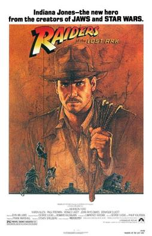

Raiders of the Lost Ark
A short paragraph of this film. This film is about Indiana Jones searching for ancient artifacts, and fighting off Nazis.

Temple of Doom
A short paragraph about this film. This film is about Indiana Jones looking for more ancient artifacts, and fighting off more bad people.

The Last Crusade
Short paragraph about the film. This is the third film of Indiana Jones looking for more ancient artifacts, and fighting off Nazis once again. This was not actually the last crusade because Indy comes back out of retirment years later.